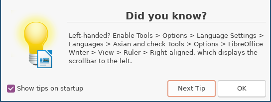

Working with computers naturally

- Libreoffice
This seems crazy, how did this happen?
You want people to be able to do powerful things with your software
You want the UI to be intuitive and discoverable
These wishes are (nearly always) in conflict.
Either certain things become buried deep in a nest of menus, unknown and unused
Or features that would be easy to implement are left out, and become impossible
We say everything should be this easy
Inimda is a natural-language processor and code-generator, that understands context, and knows APIs
It translates on-the-fly
Virtual assistants are great, they have a limited, prewritten set of capabilities
If what you want to do hasn't been programmed in, it isn't going to happen
Inimda writes its own capabilities as you ask for them
Let's look at a small example of using Inimda, if we were building a virtual assistant.
Our library of APIs will be the Python standard library, and a handful of application specific functions, let's let inimda handle the rest.
set an alarm for 7:30 tomorrow
Inimda processes this to
TOP
|
S
|
VP
____________|_________
| VP|
| ______________|_______________
| | VP|
| | ______|_________
| | PP |
| | ________|______ |
| NP | NP NP
| ___|____ | | |
_ _ _ _ _ _
| | | | | |
set an alarm for 7:30 tomorrow
Inimda decides it will probably need following apis
def assistant_schedule_at(time: datetime.datetime, f: Callable[[], None]) -> None:
"""
Schedules the function f to be run at the given time (provided by our application)
"""
pass
def assistant_alarm() -> None:
"""
Function that sounds an alarm when run (provided by our application)
"""
pass
datetime.datetime.replace # standard library functions
...
Inimda generates
tomorrow = datetime.datetime.now() +
datetime.timedelta(days=1)
tomorrow_time = tomorrow.replace(hour=7, minute=30,
second=0, microsecond=0)
assistant_schedule_at(tomorrow_time, assistant_alarm)
Inimda allows the user to interact naturally with an application, without preprogramming and describing what action are possible.
Contact us